가스기사 (2021-08-14 기출문제)
1과목: 가스유체역학
1. 직경이 10cm인 90° 엘보에 계기압력 2kgf/cm2 의 물이 3m/s로 흘러 들어온다. 엘보를 고정시키는데 필요한 x 방향의 힘은 약 몇 kgf 인가?
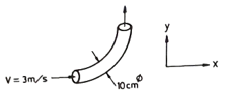
- 157
- 164
- 171
- 179
(정답률: 40%)

2. 유체의 흐름에 대한 설명으로 다음 중 옳은 것을 모두 나타내면?
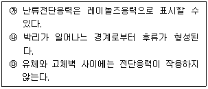
- ㉮
- ㉮, ㉰
- ㉮, ㉯
- ㉮, ㉯, ㉰
(정답률: 49%)
3. 수면의 높이차가 20m 인 매우 큰 두 저수지 사이에 분당 60m3으로 펌프라 물을 아래에서 위로 이송하고 있다. 이 때 전체 손실수두는 5m 이다. 펌프의 효율이 0.9일 때 펌프에 공급해 주어야 하는 동력은 얼마인가?
- 163.3 kW
- 220.5 kW
- 245.0 kW
- 272.2 kW
(정답률: 35%)
4. 다음과 같은 베르누이 방정식이 적용되는 조건을 모두 나열한 것은?
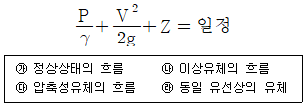
- ㉮, ㉯, ㉱
- ㉯, ㉱
- ㉮, ㉰
- ㉯, ㉰, ㉱
(정답률: 62%)
5. 실린더 내에 압축된 액체가 압력 100MPa에서 0.5m3의 부피를 가지며, 압력 101MPa에서는 0.495m3 의 부피를 갖는다. 이 액체의 체적 탄성계수는 약 몇 MPa 인가?
- 1
- 10
- 100
- 1000
(정답률: 36%)
6. 두 평판 사이에 유체가 있을 때 이동 평판을 일정한 속도 u로 운동시키는데 필요한 힘 F에 대한 설명으로 틀린 것은?
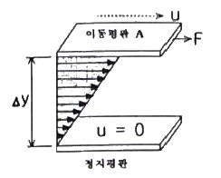
- 평판의 면적이 클수록 크다.
- 이동속도 u가 클수록 크다.
- 두 평판의 간격 △y가 클수록 크다.
- 평판 사이에 점도가 큰 유체가 존재할수록 크다.
(정답률: 54%)
7. 동점도(Kinematic Viscosity) ν가 4 stokes인 유체가 안지름 10cm인 관 속을 80cm/s 의 평균속도로 흐를 때 이 유체의 흐름에 해당하는 것은?
- 플러그 흐름
- 층류
- 전이영역의 흐름
- 난류
(정답률: 44%)
8. 압축성 이상기체의 흐름에 대한 설명으로 옳은 것은?
- 무마찰, 등온흐름이면 압력과 부피의 곱은 일정하다.
- 무마찰, 단열흐름이면 압력과 온도의 곱은 일정하다.
- 무마찰, 단열흐름이면 엔트로피는 증가한다.
- 무마찰, 등온흐름이면 정체온도는 일정하다.
(정답률: 29%)
9. 다음 중 1 cP(centipoise)를 옳게 나타낸 것은?
- 10kg·m2/s
- 10-2dyne·cm2/s
- 1N/cm·s
- 10-2dyne·s/cm2
(정답률: 36%)
10. 등엔트로피 과정하에서 완전기체 중의 음속을 옳게 나타낸 것은? (단, E는 체적탄성계수, R은 기체상수, T는 기체의 절대온도, P는 압력, k는 비열비이다.)
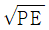
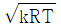
- RT
- PT
(정답률: 62%)
11. 공기가 79vol% N2 와 21vol% O2로 이루어진 이상기체 혼합물이라 할 때 25℃, 750mmHg에서 밀도는 약 몇 kg/m3 인가?
- 1.16
- 1.42
- 1.56
- 2.26
(정답률: 31%)
12. 그림은 수축노즐을 갖는 고압용기에서 기체가 분출될 때 질량유량(
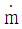
)과 배압(Pb)과 용기내부 압력(Pr)의 비의 관계를 도시한 것이다. 다음 중 질식된(choking)상태만 모은 것은?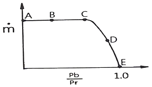
- A, E
- B, D
- D, E
- A, B
(정답률: 50%)
13. 지름 20cm 인 원형관이 한 변의 길이가 20cm인 정사각형 단면을 가지는 덕트와 연결되어 있다. 원형관에서 물의 평균속도가 2m/s 일 때, 덕트에서 물의 평균속도는 얼마인가?
- 0.78m/s
- 1m/s
- 1.57m/s
- 2m/s
(정답률: 42%)
14. 지름 1cm의 원통관에 5℃ 의 물이 흐르고 있다. 평균속도가 1.2m/s 일 때 이 흐름에 해당하는 것은? (단, 5℃ 물의 동점성계수 ν는 1.788×10-6 m2/s 이다.)
- 천이구간
- 층류
- 포텐셜유동
- 난류
(정답률: 38%)
15. 원형관에서 완전난류 유동일 때 손실수두는?
- 속도수두에 비례한다.
- 속도수두에 반비례한다.
- 속도수두에 관계없으며, 관의 지름에 비례한다.
- 속도에 비례하고, 관의 길이에 반비례한다.
(정답률: 44%)
16. 펌프의 흡입부 압력이 유체의 증기압보다 낮을 때 유체내부에서 기포가 발생하는 현상을 무엇이라 하는가?
- 캐비테이션
- 이온화 현상
- 서어징 현상
- 에어바인딩
(정답률: 59%)
17. 구형입자가 유체 속으로 자유 낙하할 때의 현상으로 틀린 것은? (단, μ는 점성계수, d는 구의 지름, U는 속도이다.)
- 속도가 매우 느릴 때 항력(drag force)은 3πμdU 이다.
- 입자에 작용하는 힘을 중력, 부력으로 구분할 수 있다.
- 항력계수(CD)는 레이놀즈수가 증가할수록 커진다.
- 종말속도는 가속도가 감소되어 일정한 속도에 도달한 것이다.
(정답률: 55%)
18. 관 내를 흐르고 있는 액체의 유속이 급격히 감소할 때, 일어날 수 있는 현상은?
- 수격현상
- 서어징 현상
- 캐비테이션
- 수직충격파
(정답률: 51%)
19. 다음은 축소-확대 노즐을 통해 흐르는 등엔트로피 흐름에서 노즐거리에 대한 압력 분포 곡선이다. 노즐 출구에서의 압력을 낮출 때 노즐목에서 처음으로 음속흐름(sonic flow)이 일어나기 시작하는 선을 나타낸 것은?
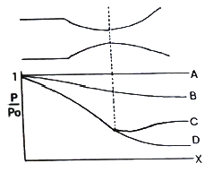
- A
- B
- C
- D
(정답률: 56%)
20. 다음 중 뉴턴의 점성법칙과 관련성이 가장 먼 것은?
- 전단응력
- 점성계수
- 비중
- 속도구배
(정답률: 52%)
2과목: 연소공학
21. 공기흐름이 난류일 때 가스연료의 연소현상에 대한 설명으로 옳은 것은?
- 화염이 뚜렷하게 나타난다.
- 연소가 양호하여 화염이 짧아진다.
- 불완전연소에 의해 열효율이 감소한다.
- 화염이 길어지면서 완전연소가 일어난다.
(정답률: 42%)
22. 연소 시 실제로 사용된 공기량을 이론적으로 필요한 공기량으로 나눈 것을 무엇이라 하는가?
- 공기비
- 당량비
- 혼합비
- 연료비
(정답률: 58%)
23. 연소온도를 높이는 방법으로 가장 거리가 먼 것은?
- 연료 또는 공기를 예열한다.
- 발열량이 높은 연료를 사용한다.
- 연소용 공기의 산소농도를 높인다.
- 복사전열을 줄이기 위해 연소속도를 늦춘다.
(정답률: 56%)
24. 메탄 80v%, 에탄 15v%, 프로판 4v%, 부탄 1v%인 혼합가스의 공기 중 폭발하한계 값은 약 몇 % 인가? (단, 각 성분의 하한계 값은 메탄 5%, 에탄 3%, 프로판 2.1%, 부판 1.8%이다.)
- 2.3
- 4.3
- 6.3
- 8.3
(정답률: 45%)
25. 다음 중 가역단열 과정에 해당하는 것은?
- 정온과정
- 정적과정
- 등엔탈피과정
- 등엔트로피과정
(정답률: 49%)
26. 가로 4m, 세로 4.5m, 높이 2.5m 인 공간에 아세틸렌이 누출되고 있을 때 표준상태에서 약 몇 kg이 누출되면 폭발이 가능한가?
- 1.3
- 1.0
- 0.7
- 0.4
(정답률: 25%)
27. Diesel cycle의 효율이 좋아지기 위한 조건은? (단, 압축비를 ε, 단절비(cut-off ratio)를 σ라 한다.)
- ε와 σ가 클수록
- ε가 크고 σ가 작을수록
- ε가 크고 σ가 일정할수록
- ε가 일정하고, σ가 클수록
(정답률: 53%)
28. 가장 미세한 입자까지 집진할 수 있는 집진장치는?
- 사이클론
- 중력 집진기
- 여과 집진기
- 스크러버
(정답률: 48%)
29. 메탄가스 1m3를 완전 연소시키는데 필요한 공기량은 약 몇 Sm3 인가? (단, 공기 중 산소는 21% 이다.)
- 6.3
- 7.5
- 9.5
- 12.5
(정답률: 46%)
30. 흑체의 온도가 20℃에서 100℃로 되었다면, 방사하는 복사에너지는 몇 배가 되는가?
- 1.6
- 2.0
- 2.3
- 2.6
(정답률: 27%)
31. 지구온난화를 유발하는 6대 온실가스가 아닌 것은?
- 이산화탄소
- 메탄
- 염화불화탄소
- 이산화질소
(정답률: 51%)
32. 산소(O2)의 기본특성에 대한 설명 중 틀린 것은?
- 오일과 혼합하면 산화력의 증가로 강력히 연소한다.
- 자신은 스스로 연소하는 가연성이다.
- 순산소 중에서는 철, 알루미늄 등도 연소되며 금속산화물을 만든다.
- 가연성 물질과 반응하여 폭발할 수 있다.
(정답률: 60%)
33. 과잉공기량이 지나치게 많을 때 나타나는 현상으로 틀린 것은?
- 연소실 온도 저하
- 연료 소비량 증가
- 배기가스 온도의 상승
- 배기가스에 의한 열손실 증가
(정답률: 37%)
34. Propane가스의 연소에 의한 발열량이 11780 kcal/kg이고 연소할 때 발생된 수증기의 잠열이 1900kcal/kg 이라면 Propane가스의 연소효율은 약 몇 % 인가? (단, 진발열량은 11500kcal/kg 이다.)
- 66
- 76
- 86
- 96
(정답률: 43%)
35. 혼합기체의 특성에 대한 설명으로 틀린 것은?
- 압력비와 몰비는 같다.
- 몰비는 질량비와 같다.
- 분압은 전압에 부피분율을 곱한 값이다.
- 분압은 전압에 어느 성분의 몰분율을 곱한 값이다.
(정답률: 34%)
36. “혼합 가스의 압력은 각 기체가 단독으로 확산할 때의 분압의 합과 같다.”라는 것은 누구의 법칙인가?
- Boyle-Charles 의 법칙
- Dalton 의 법칙
- Graham 의 법칙
- Avogadro 의 법칙
(정답률: 56%)
37. 이상기체에 대한 설명으로 틀린 것은?
- 보일·샤를의 법칙을 만족한다.
- 아보가드로의 법칙에 따른다.
- 비열비(k=CP/CV)는 온도에 관계없이 일정하다.
- 내부에너지는 체적과 관계있고 온도와는 무관하다.
(정답률: 57%)
38. 다음 중 착화온도가 가장 낮은 물질은?
- 목탄
- 무연탄
- 수소
- 메탄
(정답률: 47%)
39. 분진 폭발의 발생 조건으로 가장 거리가 먼 것은?
- 분진이 가연성이어야 한다.
- 분진 농도가 폭발범위 내에서는 폭발하지 않는다.
- 분진이 화염을 전파할 수 있는 크기 분포를 가져야 한다.
- 착화원, 가연물, 산소가 있어야 발생한다.
(정답률: 58%)
40. 연소범위에 대한 설명으로 옳은 것은?
- N2를 가연성가스에 혼합하면 연소범위는 넓어진다.
- CO2를 가연성가스에 혼합하면 연소범위가 넓어진다.
- 가연성가스는 온도가 일정하고 압력이 내려가면 연소범위가 넓어진다.
- 가연성가스는 온도가 일정하고 압력이 올라가면 연소범위가 넓어진다.
(정답률: 47%)
3과목: 가스설비
41. 분젠식 버너의 구성이 아닌 것은?
- 블러스트
- 노즐
- 댐퍼
- 혼합관
(정답률: 32%)
42. 공동 주택에 압력조정기를 설치할 경우 설치기준으로 맞는 것은?
- 공동주택 등에 공급되는 가스압력이 중압 이상으로서 전세대수가 200세대 미만인 경우 설치할 수 있다.
- 공동주택 등에 공급되는 가스압력이 저압으로서 전세대수가 250세대 미만인 경우 설치할 수 있다.
- 공동주택 등에 공급되는 가스압력이 중압이상으로서 전세대수가 300세대 미만인 경우설치할 수 있다.
- 공동주택 등에 공급되는 가스압력이 저압으로서 전세대수가 350세대 미만인 경우 설치할 수 있다.
(정답률: 46%)
43. AFV식 정압기의 작동상황에 대한 설명으로 옳은 것은?
- 가스사용량이 증가하면 파일롯밸브의 열림이 감소한다.
- 가스사용량이 증가하면 구동압력은 저하한다.
- 가스 사용량이 감소하면 2차 압력이 감소한다.
- 가스 사용량이 감소하면 고무슬리브의 개도는 증대된다.
(정답률: 36%)
44. 압력 2MPa 이하의 고압가스 배관설비로서 곡관을 사용하기가 곤란한 경우 가장 적정한 신축이음매는?
- 벨로우즈형 신축이음매
- 루프형 신축이음매
- 슬리브형 신축이음매
- 스위블형 신축이음매
(정답률: 48%)
45. 탄소강이 약 200~300℃에서 인장강도는 커지나 연신율이 갑자기 감소되어 취약하게 되는 성질을 무엇이라 하는가?
- 적열취성
- 청열취성
- 상온취성
- 수소취성
(정답률: 42%)
46. 도시가스의 제조 공정 중 부분연소법의 원리를 바르게 설명한 것은?
- 메탄에서 원유까지의 탄화수소를 원료로 하여 산소 또는 공기 및 수증기를 이용하여 메탄, 수소, 일산화탄소, 이산화탄소로 변환시키는 방법이다.
- 메탄을 원료로 사용하는 방법으로 산소 또는 공기 및 수증기를 이용하여 수소, 일산화탄소만을 제조하는 방법이다.
- 에탄만을 원료로 하여 산소 또는 공기 및 수증기를 이용하여 메탄만을 생성시키는 방법이다.
- 코크스만을 사용하여 산소 또는 공기 및 수증기를 이용하여 수소와 일산화탄소만을 제조하는 방법이다.
(정답률: 40%)
47. 발열량 5000kcal/m3, 비중 0.61, 공급표준압력 100mmH2O인 가스에서 발열량 11000kcal/m3, 비중 0.66, 공급표준압력이 200mmH2O인 천연가스로 변경할 경우 노즐변경율은 얼마인가?
- 0.49
- 0.58
- 0.71
- 0.82
(정답률: 34%)
48. 용기밸브의 구성이 아닌 것은?
- 스템
- O링
- 스핀들
- 행거
(정답률: 46%)
49. 액화천연가스(메탄기준)를 도시가스 원료로 사용할 때 액화천연가스의 특징을 바르게 설명한 것은?
- C/H 질량비가 3 이고 기화설비가 필요하다.
- C/H 질량비가 4 이고 기화설비가 필요 없다.
- C/H 질량비가 3 이고 가스제조 및 정제설비가 필요하다.
- C/H 질량비가 4 이고 개질설비가 필요하다.
(정답률: 49%)
50. LPG 수송관의 이음부분에 사용할 수 있는 패킹재료로 가장 적합한 것은?
- 목재
- 천연고무
- 납
- 실리콘 고무
(정답률: 56%)
51. 아세틸렌의 압축 시 분해폭발의 위험을 줄이기 위한 반응장치는?
- 겔로그 반응장치
- LG 반응장치
- 파우서 반응장치
- 레페 반응장치
(정답률: 45%)
52. 다음 중 화염에서 백-파이어(Back-fire)가 가장 발생하기 쉬운 원인은?
- 버너의 과열
- 가스의 과량공급
- 가스압력의 상승
- 1차 공기량의 감소
(정답률: 47%)
53. 공기액화 분리장치의 폭발 방지대책으로 옳지 않은 것은?
- 장치 내에 여과기를 설치한다.
- 유분리기는 설치해서는 안 된다.
- 흡입구 부근에서 아세틸렌 용접은 하지 않는다.
- 압축기의 윤활유는 양질유를 사용한다.
(정답률: 50%)
54. LP가스 판매사업의 용기보관실의 면적은?
- 9m2 이상
- 10m2 이상
- 12m2 이상
- 19m2 이상
(정답률: 46%)
55. 전기방식법 중 효과범위가 넓고, 전압, 전류의 조정이 쉬우며, 장거리 배관에는 설치갯수가 적어지는 장점이 있고, 초기 투자가 많은 단점이 있는 방법은?
- 희생양극법
- 외부전원법
- 선택배류법
- 강제배류법
(정답률: 50%)
56. 양정 20m, 송수량 3m3/min 일 때 축동력 15PS를 필요로 하는 원심펌프의 효율은 약 몇 % 인가?
- 59%
- 75%
- 89%
- 92%
(정답률: 40%)
57. 토출량이 5m3/min 이고, 펌프송출구의 안지름이 30cm일 때 유속은 약 몇 m/s 인가?
- 0.8
- 1.2
- 1.6
- 2.0
(정답률: 38%)
58. 연소방식 중 급배기 방식에 의한 분류로서 연소에 필요한 공기를 실내에서 취하고, 연소 후 배기가스는 배기통으로 옥외로 방출하는 형식은?
- 노출식
- 개방식
- 반밀폐식
- 밀폐식
(정답률: 46%)
59. 탄소강에 소량씩 함유하고 있는 원소의 영향에 대한 설명으로 틀린 것은?
- 인(P)은 상온에서 충격치를 떨어뜨려 상온메짐의 원인이 된다.
- 규소(Si)는 경도는 증가시키나 단접성은 감소시킨다.
- 구리(Cu)는 인장강도와 탄성계수를 높이나 내식성은 감소시킨다.
- 황(S)은 Mn과 결합하여 MnS를 만들고 남은 것이 있으면 FeS를 만들어 고온메짐의 원인이 된다.
(정답률: 40%)
60. 액화천연가스 중 가장 많이 함유되어 있는 것은?
- 메탄
- 에탄
- 프로판
- 일산화탄소
(정답률: 56%)
4과목: 가스안전관리
61. 고압가스 충전용기 운반 시 동일차량에 적재하여 운반할 수 있는 것은?
- 염소와 아세틸렌
- 염소와 암모니아
- 염소와 질소
- 염소와 수소
(정답률: 53%)
62. 고온, 고압하의 수소에서는 수소원자가 발생되어 금속조직으로 침투하여 carbon이 결합, CH4 등의 gas를 생성하여 용기가 파열하는 원인이 될 수 있는 현상은?
- 금속조직에서 탄소의 추출
- 금속조직에서 아연의 추출
- 금속조직에서 구리의 추출
- 금속조직에서 스테인리스강의 추출
(정답률: 55%)
63. 고압가스 저장탱크 실내설치의 기준으로 틀린 것은?
- 가연성가스 저장탱크실에는 가스누출검지경보장치를 설치한다.
- 저장탱크실은 각각 구분하여 설치하고 자연환기시설을 갖춘다.
- 저장탱크에 설치한 안전밸브는 지상 5m 이상의 높이에 방출구가 있는 가스방출관을 설치한다.
- 저장탱크의 정상부와 저장탱크실 천장과의 거리는 60cm 이상으로 한다.
(정답률: 46%)
64. 고압가스 냉동제조설비의 냉매설비에 설치하는 자동제어장치 설치기준으로 틀린 것은?
- 압축기의 고압측 압력이 상용압력을 초과하는 때에 압축기의 운전을 정지하는 고압차단장치를 설치한다.
- 개방형 압축기에서 저압측 압력이 상용압력보다 이상 저하할 때 압축기의 운전을 정지하는 저압차단장치를 설치한다.
- 압축기를 구동하는 동력장치에 과열방지장치를 설치한다.
- 쉘형 액체 냉각기에 동결방지장치를 설치한다.
(정답률: 34%)
65. 독성고압가스의 배관 중 2중관의 외층관 내경은 내층관 외경의 몇 배 이상을 표준으로 하여야 하는가?
- 1.2배
- 1.25배
- 1.5배
- 2.0배
(정답률: 36%)
66. 정전기 발생에 대한 설명으로 옳지 않은 것은?
- 물질의 표면상태가 원활하면 발생이 적어진다.
- 물질표면이 기름 등에 의해 오염되었을 때는 산화, 부식에 의해 정전기가 발생할 수 있다.
- 정전기의 발생은 처음 접촉, 분리가 일어났을 때 최대가 된다.
- 분리속도가 빠를수록 정전기의 발생량은 적어진다.
(정답률: 56%)
67. 염소가스의 제독제가 아닌 것은?
- 가성소다수용액
- 물
- 탄산소다수용액
- 소석회
(정답률: 57%)
68. 도시가스시설의 완성검사 대상에 해당하지 않는 것은?
- 가스사용량의 증가로 특정가스사용시설로 전환되는 가스사용시설 변경공사
- 특정가스사용시설로서 호칭지름 50mm의 강관을 25m 교체하는 변경공사
- 특정가스사용시설의 압력조정기를 증설하는 변경공사
- 특정가스사용시설에서 배관변경을 수반하지 않고 월사용예정량 550m3 이설하는 변경공사
(정답률: 40%)
69. 시안화수소(HCN)를 용기에 충전할 경우에 대한 설명으로 옳지 않은 것은?
- 순도는 98% 이상으로 한다.
- 아황산가스 또는 황산 등의 안정제를 첨가한다.
- 충전한 용기는 충전 후 12시간 이상 정치한다.
- 일정시간 정치한후 1일 1회 이상 질산구리벤젠 등의 시험지로 누출을 검사한다.
(정답률: 53%)
70. 용기에 의한 액화석유가스 사용시설에서 기화장치의 설치기준에 대한 설명으로 틀린 것은?
- 기화장치의 출구측 압력은 1MPa 미만이 되도록 하는 기능을 갖거나, 1MPa 미만에서 사용한다.
- 용기는 그 외면으로부터 기화장치까지 3m 이상의 우회거리를 유지한다.
- 기화장치의 출구 배관에는 고무호스를 직접 연결하지 아니한다.
- 기화장치의 설치장소에는 배수구나 집수구로 통하는 도랑을 설치한다.
(정답률: 37%)
71. 안전관리규정의 작성기준에서 다음 보기 중 종합적 안전관리 규정에 포함되어야 할 항목을 모두 나열한 것은?
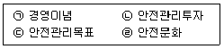
- ㉠, ㉡, ㉢
- ㉠, ㉡, ㉣
- ㉠, ㉢, ㉣
- ㉠, ㉡, ㉢, ㉣
(정답률: 52%)
72. 액화가스의 저장탱크 압력이 이상 상승하였을 때 조치사항으로 옳지 않은 것은?
- 방출배르를 열어 가스를 방출시킨다.
- 살수장치를 작동시켜 저장탱크를 냉각시킨다.
- 액 이입 펌프를 정지시킨다.
- 출구 측의 긴급차단밸브를 작동시킨다.
(정답률: 49%)
73. 내용적이 59L의 LPG 용기에 프로판을 충전할 때 최대 충전량은 약 몇 kg으로 하면 되는가? (단, 프로판의 정수는 2.35 이다.)
- 20kg
- 25kg
- 30kg
- 35kg
(정답률: 51%)
74. 고압가스 용기 보관장소의 주위 몇 m 이내에는 화기 또는 인화성 물질이나, 발화성 물질을 두지 않아야 하는가?
- 1m
- 2m
- 5m
- 8m
(정답률: 40%)
75. 가스누출 경보차단장치의 성능시험 방법으로 틀린 것은?
- 가스를 검지한 상태에서 연속경보를 울린 후 30초 이내에 가스를 차단하는 것으로 한다.
- 교류전원을 사용하는 차단장치는 전압이 정격전압의 90% 이상 110% 이하일 때 사용에 지장이 없는 것으로 한다.
- 내한성능에서 제어부는 –25℃ 이하에서 1시간 이상 유지한 후 5분 이내에 작동시험을 실시하여 이상이 없어야 한다.
- 전자밸브식 차단부는 35kPa 이상의 압력으로 기밀시험을 실시하여 외부누출이 없어야 한다.
(정답률: 50%)
76. 매몰형 폴리에틸렌 볼밸브의 사용압력 기준은?
- 0.4 MPa 이하
- 0.6 MPa 이하
- 0.8 MPa 이하
- 1 MPa 이하
(정답률: 45%)
77. 고압가스를 운반하는 차량에 경계표지의 크기는 어떻게 정하는가?
- 직사각형인 경우, 가로 치수는 차체 폭의 20% 이상, 세로 치수는 가로 치수의 30% 이상, 정사각형의 경우 그 면적을 400cm2 이상으로 한다.
- 직사각형인 경우, 가로 치수는 차체 폭의 30% 이상, 세로 치수는 가로 치수의 20% 이상, 정사각형의 경우 그 면적을 400cm2 이상으로 한다.
- 직사각형인 경우, 가로 치수는 차체 폭의 20% 이상, 세로 치수는 가로 치수의 30% 이상, 정사각형의 경우 그 면적을 600cm2 이상으로 한다.
- 직사각형인 경우, 가로 치수는 차체 폭의 30% 이상, 세로 치수는 가로 치수의 20% 이상, 정사각형의 경우 그 면적을 600cm2 이상으로 한다.
(정답률: 34%)
78. 고압가스제조시설에서 아세틸렌을 충전하기 위한 설비 중 충전용 지관에는 탄소 함유량이 얼마 이하의 강을 사용하여야 하는가?
- 0.1%
- 0.2%
- 0.33%
- 0.5%
(정답률: 40%)
79. CO 15v%, H2 30v%, CH4 55v%인 가연성 혼합가스의 공기 중 폭발하한계는 약 몇 v% 인가? (단, 각 가스의 폭발하한계는 CO 12.5v%, H2 4.0v%, CH4 5.3v% 이다.)
- 5.2
- 5.8
- 6.4
- 7.0
(정답률: 30%)
80. 액화석유가스용 차량에 고정된 저장탱크 외벽이 화염에 의하여 국부적으로 가열될 경우에 대비하여 폭발방지장치를 설치한다. 이 때 재료로 사용되는 금속은?
- 아연
- 알루미늄
- 주철
- 스테인리스
(정답률: 49%)
5과목: 가스계측기기
81. 베크만 온도계는 어떤 종류의 온도계에 해당하는가?
- 바이메탈 온도계
- 유리 온도계
- 저항 온도계
- 열전대 온도계
(정답률: 34%)
82. 입력과 출력이 그림과 같을 때 제어동작은?
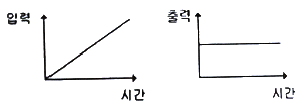
- 비례동작
- 미분동작
- 적분동작
- 비례적분동작
(정답률: 43%)
83. 기체 크로마토그래피에서 사용되는 캐리어가스(carrier gas)에 대한 설명으로 옳은 것은?
- 가격이 저렴한 공기를 사용해도 무방하다.
- 검출기의 종류에 관계없이 구입이 용이한 것을 사용한다.
- 주입된 시료를 컬럼과 검출기로 이동시켜 주는 운반기체 역할을 한다.
- 캐리어가스는 산소, 질소, 아리곤 등이 주로 사용된다.
(정답률: 51%)
84. 경사각(θ)이 30°인 경사관식 압력계의 눈금(χ)을 읽었더니 60cm가 상승하였다. 이 때 양단의 차압(P1-P2)은 약 몇 kgf/cm2 인가? (단, 액체의 비중은 0.8인 기름이다.)
- 0.001
- 0.014
- 0.024
- 0.034
(정답률: 34%)
85. 어느 수용가에 설치되어 있는 가스미터의 기차를 측정하기 위하여 기준기로 지시량을 측정하였더니 150m3을 나타내었다. 그 결과 기차가 4%로 계산되었다면 이 가스미터의 지시량은 몇 m3 인가?
- 149.96m3
- 150m3
- 156m3
- 156.25m3
(정답률: 33%)
86. 차압식 유량계에서 교축 상류 및 하류의 압력이 각각 P1, P2 일 때 체적유량이 Q1 이라 한다. 압력이 2배 만큼 증가하면 유량 Q는 얼마가 되는가?
- 2Q1
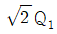
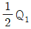
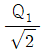
(정답률: 44%)
87. 기체 크로마토그래피에 의한 분석방법은 어떤 성질을 이용한 것인가?
- 비열의 차이
- 비중의 차이
- 연소성의 차이
- 이동속도의 차이
(정답률: 48%)
88. 태엽의 힘으로 통풍하는 통풍형 건습구 습도계로서 휴대가 편리하고 필요 풍속이 약 3m/s 인 습도계는?
- 아스만 습도계
- 모발 습도계
- 건이건습구 습도계
- Dewcel식 습도계
(정답률: 47%)
89. 막식가스미터에서 크랭크축이 녹슬거나 밸브와 밸브시트가 타르나 수분 등에 의해 접착 또는 고착되어 가스가 미터를 통과하지 않는 고장의 형태는?
- 부동
- 기어불량
- 떨림
- 불통
(정답률: 50%)
90. 소형 가스미터(15호 이하)의 크기는 1개의 가스기구가 당해 가스미터에서 최대 통과량의 얼마를 통과할 때 한 등급 큰 계량기를 선택하는 것이 가장 적당한가?
- 90%
- 80%
- 70%
- 60%
(정답률: 38%)
91. 기체 크로마토그래피의 조작과정이 다음과 같을대 조작 순서가 가장 올바르게 나열된 것은?
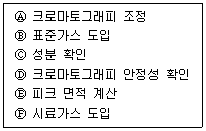
- Ⓐ-Ⓓ-Ⓑ-Ⓕ-Ⓒ-Ⓔ
- Ⓐ-Ⓑ-Ⓒ-Ⓓ-Ⓔ-Ⓕ
- Ⓓ-Ⓐ-Ⓕ-Ⓑ-Ⓒ-Ⓔ
- Ⓐ-Ⓑ-Ⓓ-Ⓒ-Ⓕ-Ⓔ
(정답률: 41%)
92. 산소(O2)는 다른 가스에 비하여 강한 상자성체이므로 자장에 흡인되는 특성을 이용하여 분석하는 가스분석계는?
- 세라믹식 O2 계
- 자기식 O2 계
- 연소식 O2 계
- 밀도식 O2 계
(정답률: 55%)
93. 측정자 자신의 산포 및 관측자의 오차와 시차 등 산포에 의하여 발생하는 오차는?
- 이론오차
- 개인오차
- 환경오차
- 우연오차
(정답률: 48%)
94. 부르동관 압력계를 용도로 구분할 때 사용하는 기호로 내진(耐震)형에 해당하는 것은?
- M
- H
- V
- C
(정답률: 40%)
95. 되먹임제어와 비교한 시퀀스 제어의 특성으로 틀린 것은?
- 정성적제어
- 디지털신호
- 열린회로
- 비교제어
(정답률: 37%)
96. 용액에 시료가스를 흡수시키면 측정성분에 따라 도전율이 변하는 것을 이용한 용액도전율식 분석계에서 측정가스와 그 반응용액이 틀린 것은?
- CO2 - NaOH용액
- SO2- CH3COOH 용액
- Cl2 - AgNO3 용액
- NH3- H2SO4 용액
(정답률: 39%)
97. 다음 보기에서 설명하는 가장 적합한 압력계는?
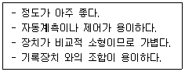
- 전기식 압력계
- 부르동관식 압력계
- 벨로우즈식 압력계
- 다이어프램식 압력계
(정답률: 50%)
98. 서미스터(thermistor)저항체 온도계의 특징에 대한 설명으로 옳은 것은?
- 온도계수가 적으며 균일성이 좋다.
- 저항변화가 적으며 재현성이 좋다.
- 온도상승에 따라 저항치가 감소한다.
- 수분 흡수 시에도 오차가 발생하지 않는다.
(정답률: 30%)
99. 염소가스를 검출하는 검출시험지에 대한 설명으로 옳은 것은?
- 연당지를 사용하며 염소가스와 접촉하면 흑색으로 변한다.
- KI- 녹말종이를 사용하며 염소가스와 접촉하면 청색으로 변한다.
- 하리슨씨 시약을 사용하며 염소가스와 접촉하면 심등색으로 변한다.
- 리트머스시험지를 사용하며 염소가스와 접촉하면 청색으로 변한다.
(정답률: 41%)
100. 다음 보기에서 자동제어의 일반적인 동작순서를 바르게 나열한 것은?
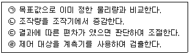
- ㉣ → ㉠ → ㉢ → ㉡
- ㉣ → ㉡ → ㉠ → ㉢
- ㉡ → ㉠ → ㉣ → ㉢
- ㉡ → ㉠ → ㉢ → ㉣
(정답률: 36%)
먼저, 물이 엘보에 들어오기 전과 나가는 후의 운동량은 같아야 합니다. 즉, 들어오는 물의 운동량과 나가는 물의 운동량이 같아야 합니다.
들어오는 물의 운동량은 다음과 같이 구할 수 있습니다.
$P_1 = 2text{kgf/cm}^2$
$v_1 = 3text{m/s}$
$A_1 = pi left(frac{10}{2}right)^2 = 78.5text{cm}^2$
$M_1 = P_1 times A_1 = 157text{kgf}cdottext{s}^{-2}$
$P_1$은 압력, $v_1$은 속도, $A_1$은 단면적, $M_1$은 운동량을 나타냅니다.
나가는 물의 운동량은 다음과 같이 구할 수 있습니다.
$v_2 = 0text{m/s}$
$A_2 = pi left(frac{10}{2}right)^2 = 78.5text{cm}^2$
$M_2 = P_2 times A_2 = 0text{kgf}cdottext{s}^{-2}$
$v_2$는 엘보를 통과한 물의 속도이며, $P_2$는 엘보를 통과한 물의 압력입니다. 엘보를 통과한 물의 압력은 외부 기압과 같으므로 0으로 가정할 수 있습니다.
따라서, 들어오는 물의 운동량과 나가는 물의 운동량이 같으므로, 엘보에 작용하는 x 방향의 힘은 157kgf이 됩니다.
하지만, 이 문제에서는 엘보를 고정시켜야 하므로, 엘보에 작용하는 y 방향의 힘도 고려해야 합니다. 엘보에 작용하는 y 방향의 힘은 물의 중력과 엘보가 받는 반작용력의 합과 같습니다.
물의 중력은 다음과 같이 구할 수 있습니다.
$g = 9.8text{m/s}^2$
$rho = 1000text{kg/m}^3$
$V = 78.5text{cm}^3 = 0.000785text{m}^3$
$F_g = rho times V times g = 7.68text{kgf}$
$rho$는 물의 밀도, $V$는 엘보 내부의 물의 부피, $F_g$는 물의 중력을 나타냅니다.
반작용력은 엘보가 받는 힘과 같으므로, 들어오는 물의 운동량과 나가는 물의 운동량의 차이를 구하면 됩니다.
$M_1 - M_2 = P_2 times A_2 = 0text{kgf}cdottext{s}^{-2}$
따라서, 반작용력은 0이 됩니다.
따라서, 엘보에 작용하는 y 방향의 힘은 물의 중력인 7.68kgf이 됩니다.
따라서, 엘보를 고정시키는데 필요한 x 방향의 힘은 157kgf + 7.68kgf = 164kgf가 됩니다.